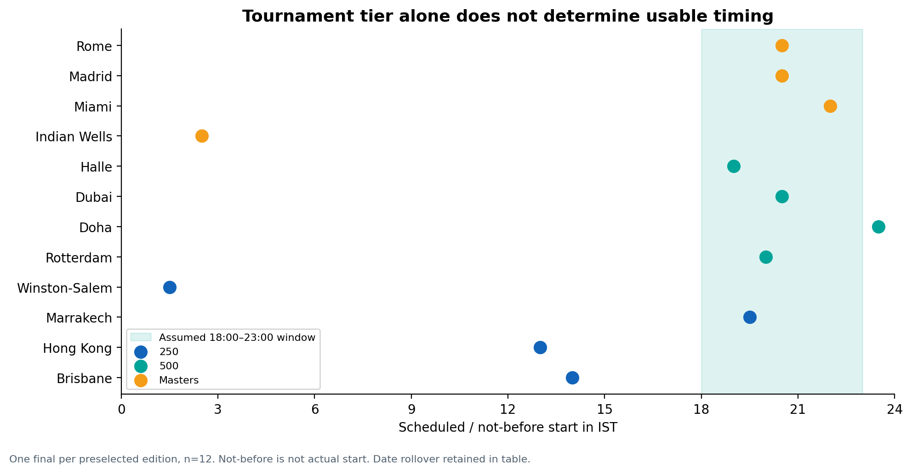
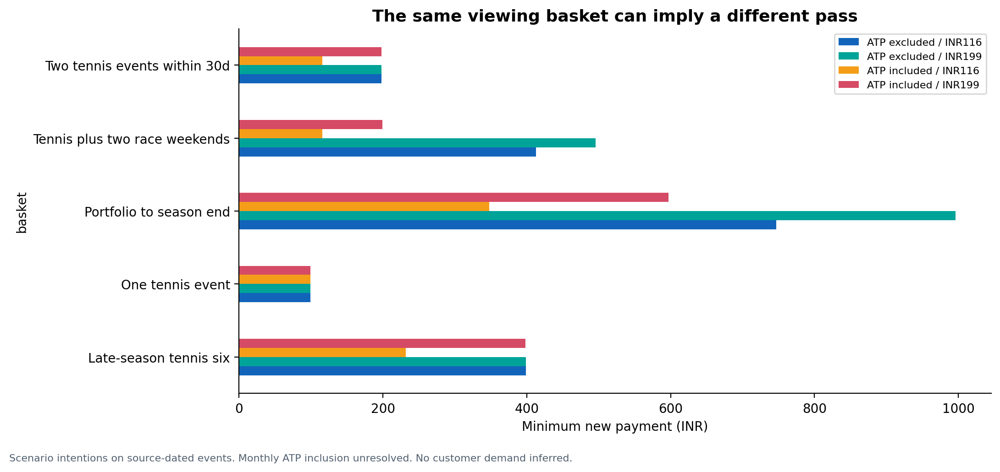
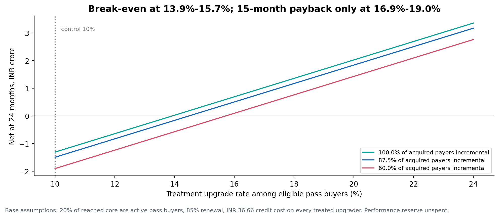
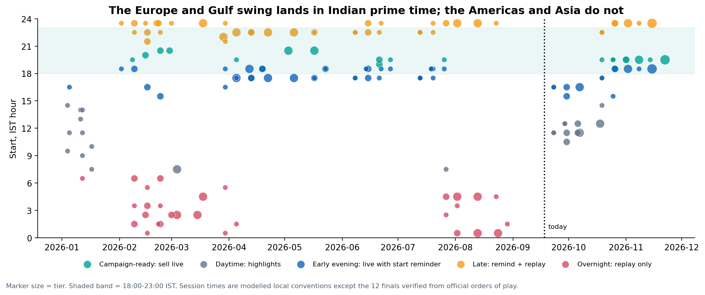

COMPETITION TEAM · OFFLINE RESEARCH PACKAGE
FanCode ATP: from viewing occasions to profitable relationships
Executed analyses using locked raw-v5 inputs. Read in numerical order. Notebook 08 holds every economic figure; notebook 10 is the campaign-ready windows list. HTML versions include the code, tables and charts.
11executed notebooks
81output tables
24charts, PNG + SVG
PASSexecution and package checks
Evidence boundaries. No survey respondents, internal company cohorts or causal experiment results are invented. Current monthly ATP inclusion remains a branch in the model. Unit costs, observed prices, case assumptions and response scenarios are labelled separately. Row-level review text remains local-only.
Notebook library
| Read HTML | Analytical purpose | Code cells | Charts | Download |
|---|
| 00 evidence and case | Raw integrity, brief definitions and requirement coverage | 4 | 1 | Executed notebook |
| 01 viewing calendar | Primary ATP calendar, 12-final comparison and timing sensitivity | 5 | 4 | Executed notebook |
| 02 portfolio clashes | F1/football clashes, MotoGP clock quarantine and co-occurrence | 5 | 1 | Executed notebook |
| 03 offers and baskets | Product audit, exact coverage baskets and dynamic-pricing rules | 5 | 2 | Executed notebook |
| 04 review friction | Review friction, store/period controls and exploratory text themes | 5 | 2 | Executed notebook |
| 05 search attention | Search interest, rounding, correlation and temporal diagnostics | 4 | 2 | Executed notebook |
| 06 player and video risk | Historical player progression, bundle risk and video metadata | 4 | 2 | Executed notebook |
| 07 contribution and pricing | Contribution, tax, repeat, credit, usage costs and rights horizon | 7 | 5 | Executed notebook |
| 08 economics model | The economics model: two cohorts, channel CAC, break-even upgrade rate and gate sizing | 9 | 3 | Executed notebook |
| 09 retention and experiments | Retention journeys, KPI denominators, experiments and power | 5 | 1 | Executed notebook |
| 10 campaign ready windows | Campaign-ready windows: the 2026 ATP calendar scored for India | 6 | 1 | Executed notebook |
Decision evidence
Economics findings · Break-even upgrade rates · Allocation by gate · Campaign windows findings · Campaign-ready windows list · Validation report · Reproduction guide
Representative outputs




Collection snapshots: 13–14 September 2026. Review cutoff: 12 September 2026. Analysis: 15 September 2026. Presentation construction and publication are separate steps.